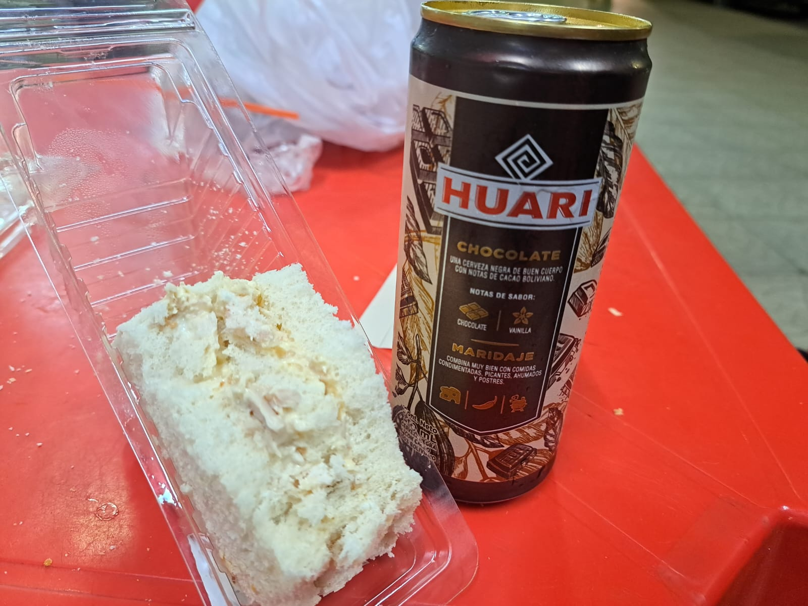
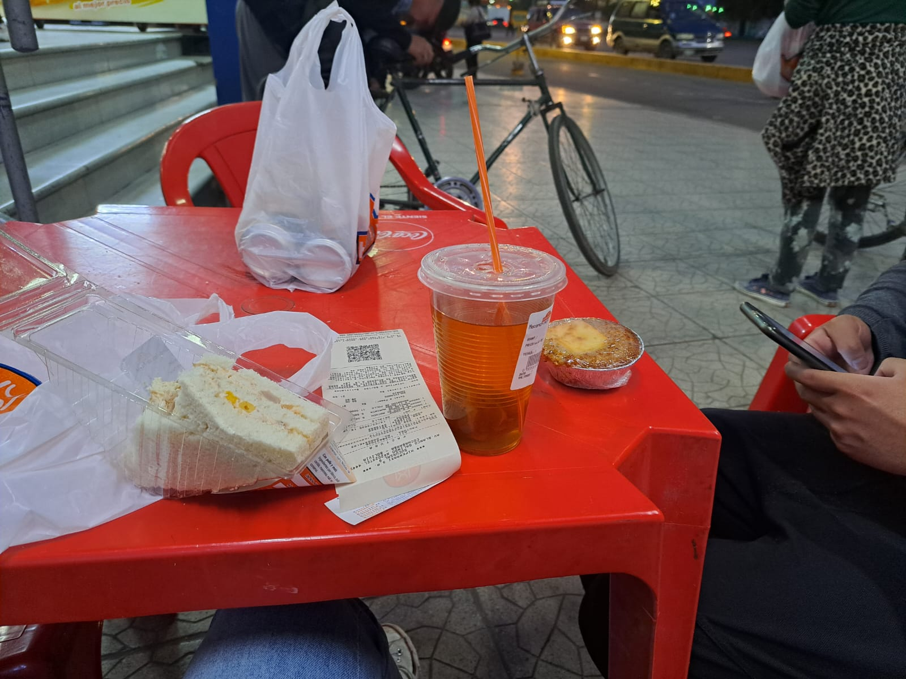

Esta página es mi regalo para hoy. Te amo.
“Alguien dijo alguna vez que la conversación es el sexo del alma” Probablemente has oído antes esta frase. Yo la leí por ahí, pero la acabo de recordar y pensé en ti.
Una vez te dije que eres raro. No sé por qué buscabas una explicación más “profunda” a la palabra raro. Pero me refería a que aún percibo tu presencia en mi vida con una extrañeza inexplicable. Inexplicable, pero feliz. Realmente no sé decir en qué momento exactamente me encariñé tanto contigo. No tengo un día o fecha, no tengo un momento que recuerde de forma tangible. Pero si eres raro. La gente suele encariñarse con la presencia física de una persona. Las conversaciones suelen ser en persona. A vos te he visto solo 2 veces. Bueno 3, si contamos el breve encuentro hace años en el que me pediste mi número de celular. El mismo número que extrañamente conservé y no perdí a través de los años.
No esperaba encariñarme de alguien a quien pues, no “conozco”. Realmente si tienes muchísima energía de aire. Llegas como un torbellino lleno de recuerdos no compartidos, o con mil preguntas sobre mil temas diferentes o a veces como brisa suave, una brisa cálida de verano, una brisa que solo te acaricia y está contigo haciéndote compañía.
Eres tempestuoso a tu manera. Pero me gusta. Creo que estoy aprendiendo a conocerte, vos me llevas un poco de ventaja en eso. Me conoces un poquito más de lo que yo te conozco a ti.
Agradezco la energía curiosa e infantil con la que llegas a mi vida. Me imagino que les pasa a todos los que te conocen, pero es como si me recordaras a cuando yo tenía curiosidad y pasión por la vida. Quizás sacas eso en las personas también, una introspección emocional respecto a su propia actitud de curiosidad hacia la vida y el universo.
Yo me siento completamente anciana a tu lado. A veces pareces un hermanito mío o un hijito, no sé. Alguien a quien disfrutas ver como se maravilla con el mundo y sus mil preguntas y respuestas y dices, vaya…soy una anciana que se ha quedado sin preguntas y cree que el dolor que siente constantemente ya le ha enseñado todo lo que había por aprender en esta vida. Una ancianita resignada a su dolor.
¿Entiendes por qué se me hace raro y refrescante tu presencia? Si, eres raro pues.
Creo que me gustaría agarrar tu libro favorito y leértelo como si tuvieras 5 años. Disfruto conocerte. Probablemente crees que no estoy prestando atención porque estás acostumbrado a la versión de mí que es ajena al mundo. Pero te prometo que no es así. Esta vez estoy prestando mucha atención. Probablemente crees que he estado distraída, y aunque es probable que nunca deje de serlo, aunque es probable que no me importen muchos detalles que quizás para ti podrían ser importantes (como tu apellido), estoy prestando atención a otro tipo de detalles que son sustanciales. También tienes tu encanto. Creo que nunca había conocido a un hombre tan niño y a un niño tan hombre. Será una dualidad geminiana o solo tuya? A veces creo que es una cosa solo muy tuya, porque los otros géminis que conozco no son tan extraños como vos. Como sea….son cositas y detallitos que iré descubriendo a medida que siga desmenuzando los pedacitos de sorpresa cotidianas que es conocerte.
Si. Me gusta conocer gente. Pero muchas veces desde un punto de vista de egoísmo cínico o desde un punto de vista del aburrimiento existencialista. Vos eres otra cosa. Es realmente un placer, un disfrute enorme conocerte, y simplemente hablar.
Gracias por recordarme que existe tantísimo placer en una conversación, como puede existir en la lectura o en la escritura. Quizás no habría recordado que puede haber tanto, tanto placer solo por hablar y oír a otra persona.
Disculpa mi hedonismo al nombrar este intercambio como placer, pero simplemente no encuentro mejor palabra que pueda describir lo deli que es simplemente leerte y charlar con vos. Bueno somos quienes somos, y quizás si me pidieras una frase en lugar de una palabra diría algo como “el placer de oír sus palabras se asemeja quizás al de las vírgenes descubriendo las mieles sexuales turgentes, prohibidas, secretas y potentes que arrollan los sentidos y dejan una marca para siempre en el recuerdo y en el alma”
…
Tienes razón, quizás no deje de ser ninfómana nunca. Quizás ahora se expresa de diferente forma. En todo caso no quiero ser tan exquisita o explícita, así que solo le diré el placer de charlar con vos.
“Alguien dijo alguna vez que la conversación es el sexo del alma” Quien lo dijo, quizás tenía un Pablito en su mente cuando lo dijo.
Gata
7/14/24
Mi amor,
Desde que empezamos esta relación, blablablablabla no puedo esperar para seguir creciendo a tu lado.
Te amo,
Gata
Gata yo siempre.
Gata, puta.
Me desnudé ante ti, como amiga, como persona, como novia y como gata.
Gata, gata del deseo, gata del fuego, gata herida, gata arisca, gata sumisa.
Un gato me buscó en las noches, un gato tierno, cruel, valiente, un gato herido también.
El gato me hizo suya y no podré soltarlo nunca más, ni él a mí.
El gato me hizo suya y me lastimó y nos lastimamos. Llevo sus marcas en el alma.
Y como gata en celo, lo busco todas las noches, le pido que me susurre nuevamente sus maullidos al oído y que me haga suya por siempre.
Y si el destino nos marca con garras invisibles, que sea bajo la luna de siempre, entre caricias de sombras, y con maullidos de placer sin fin.
En medio de gemidos, en medio de suspiros, me pediste 3 cartas. Una para mi novio, una para mi amante y otra para mi dom. Es inevitable que la primera carta que me venga a las manos, sea para el dom.
Pienso en ti y se desatan las pasiones. Pienso en ti y pierdo el control y la cordura. Pienso en tu rostro dulce que delata el sabor de tu semen, como miel para gatas traviesas, y es perfecto, es simplemente perfecto, porque contigo no quiero control, no quiero cordura, quiero perderme en el sublime deseo que solamente me provoca tu aparición, tu sed de satisfacción, tu poder sublime para llevarme al orgasmo.
Eres como la abeja a la flor, eres como la marea a la luna, eres como el fuego a la piel, quemando con cada roce.
Pienso en tus labios que escupen placer, pienso en tu cuello que huele a hombre excitado, a macho cabrío, lleno de pasión, pasión cítrica, envolvente, inevitable, imparable, incontenible. Pasión fresca y energética, despierta todos mis sentidos, y todas mis fantasías.
Estoy cerca de ti y soy presa, no puedo escapar, no puedo escapar a la dulzura que provoca tu instinto. Instinto de hombre, instinto de macho, instinto de gato, que posee, que domina, que libera, que engrandece, que explota, que explota en lujuria, en orgasmo, orgasmo eterno, orgasmo infinito y sin embargo orgasmo único e irrepetible.
Orgasmo que nace y muere con tu voluntad. Orgasmo que es solo tuyo y mío, nos pertenece solo a nosotros, a nosotros y al universo.
Mi placer te pertenece. Solo a ti. A ti, a tus labios, a tu lengua, a tus manos, a tu piel, a tu pene. A tus palabras, a tus poemas, a tus gemidos, a tus maullidos. Solo a ti.
Me has hecho tuya de tantas formas, pero descubrir mi secreto, esa faceta oculta que guardo bajo una llave de vulnerabilidad, es un regalo solo para ti. Solo tú tienes la llave y solo contigo puedo vivirla.
Quiero recorrerte siempre y que ese rincón profundo, de tu corazón, y potente de tu cuerpo, que se erige ante mi llamado de gata, que crece alegre ante mi presencia y me penetra con toda su fuerza de macho caliente, no deje jamás de abrirse paso en mis piernas débiles y delicadas, que se deleitan con su ternura.
No dejes de darme las mieles de tu amor y de tu cuerpo nunca, pero nunca jamás.
Con todo mi anhelo,
Gata
2/14/2025
Subo solamente las últimas fotos que tenemos "juntos". Espero que me ayudes a completar las fotos significativas que tuvimos con una línea cronológica de nuestra relación.
Disfrutando juntos un buen momento con una cerveza fría de chocolate. 🍻
Momentos que hacen que la vida sea aún más especial. ❤️
Sé que faltan algunas o quizás muchas otras canciones que nos hemos dedicado o que nos han definido. Estas 12 canciones son las que más recuerdo y siento que resuenan con nosotros, en mi memoria y corazón.
¡Gracias por estar en mi vida!
Eres lo mejor que me ha pasado.